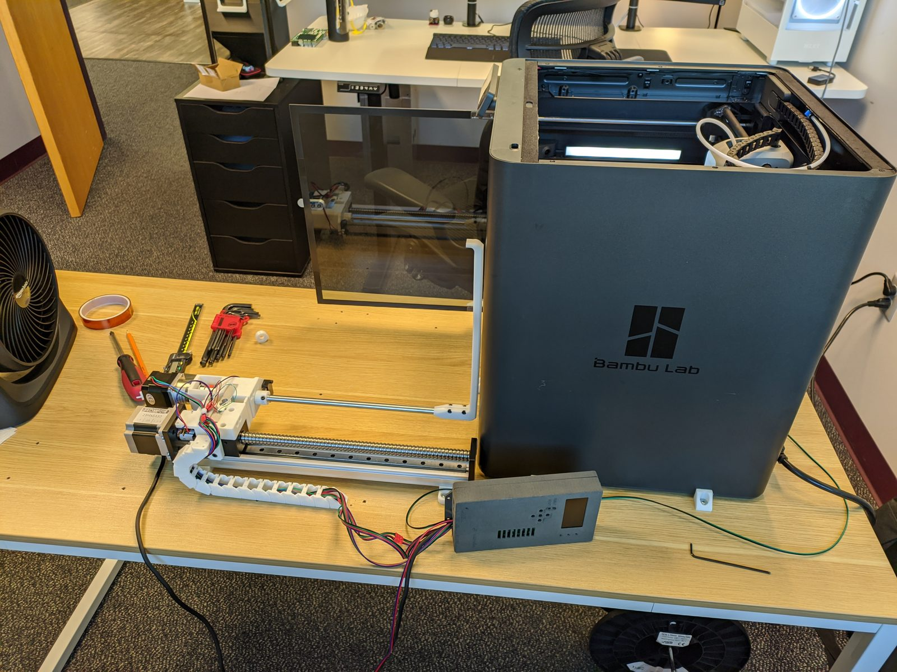
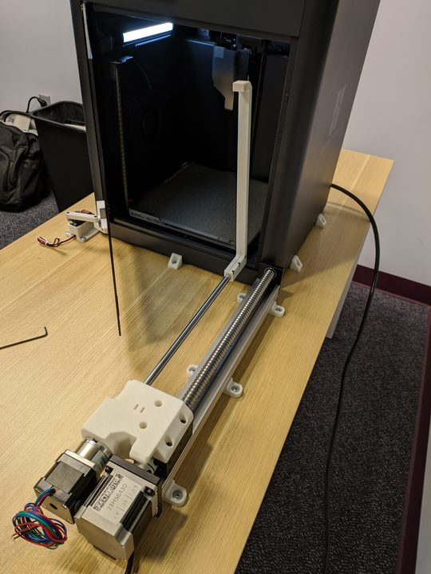
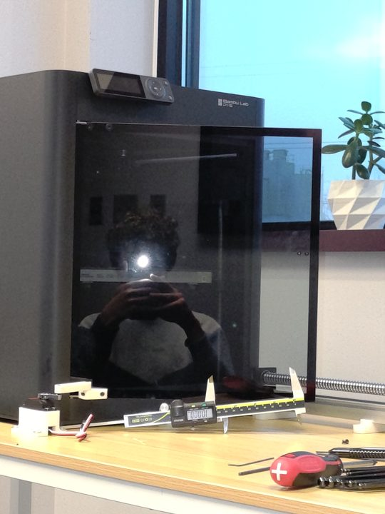
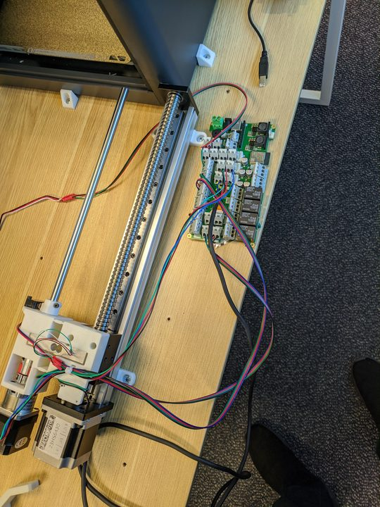
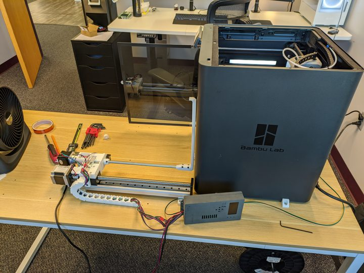
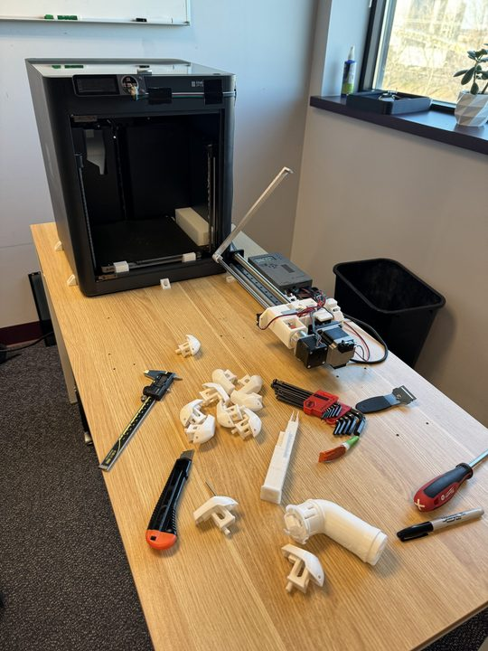
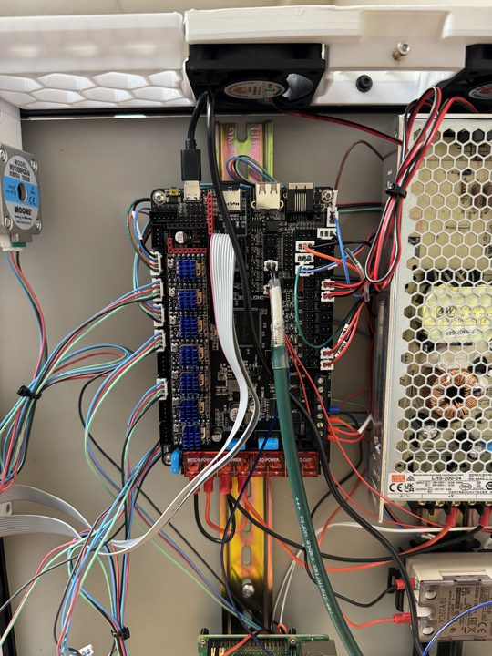
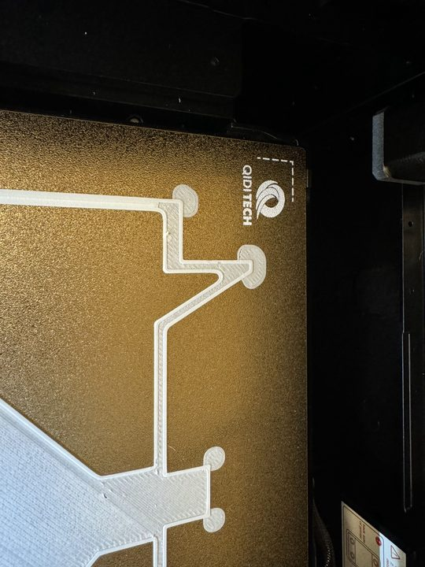
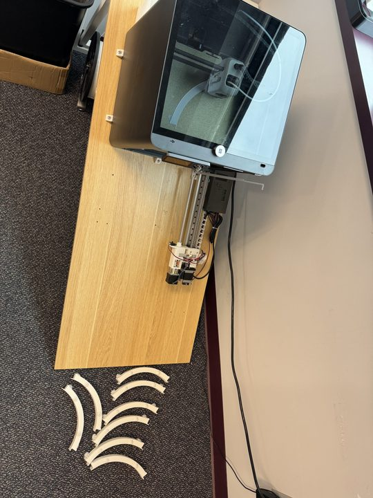

← All work
2023 – 2024 DWG
FDM Part Extraction System (Micronics)
At Micronics, an automated system that clears finished parts from an enclosed FDM printer's bed so prints can run back-to-back without an operator.
- Automation
- Linear motion
- Stepper control
- Rapid prototyping
- Startup

A printer farm loses most of its unattended time waiting for someone to remove the finished part. As one of three engineers at Micronics, a hardware startup later acquired by Formlabs, I built a part-extraction system for enclosed FDM printers: a stepper-driven linear axis with its own controller that reaches into the build chamber and clears the plate after each print.
Other Micronics work is under NDA. This is the project I'm able to show.















